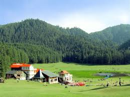

Tourist Places
Agra Fort
Agra Fort
Agra Fort
Agra Fort
Mamallpuram
Mamallpuram
Mamallpuram
Mamallpuram
Mamallpuram
Ajanta Caves
Ajanta Caves
Ajanta Caves
Ajanta Caves
Ajanta Caves
Chhtrapati Shivaji Maharaj Terminus
Chhtrapati Shivaji Maharaj Terminus
Chhtrapati Shivaji Maharaj Terminus
Jantar Mantar
Jantar Mantar
Jantar Mantar
Taj Mahal
Taj Mahal
Taj Mahal
Taj Mahal
Nandi Hills (Karnataka)
Nandi Hills (Karnataka)
Nandi Hills (Karnataka)
Nandi Hills (Karnataka)
Sky Diving In Deesa
Sky Diving In Deesa
Rafting In Teesta River
Rafting In Teesta River
Skiing on Solang Valley
Trekking In Gaumukh
Mountain Biking (Leh-Ladakh)
River Rafting (Leh-Ladakh)
Agasthyamalai Biosphere Reserve
Agasthyamalai Biosphere Reserve
Bengaluru
Bannerghatta National Park (Bengaluru)
Ahar Museum
Ajmer-E-Sharif
Albert Hall Museum
Balaji Temple (Tirupati)
Basilica of Bom Jesus
Beaches
chennai
Chhatrapati Shivaji Maharaj Vastu Sangrahalaya
City Palace (Udaipur)
Cold Desert (Himachal Pradesh)

Dalhousie (Himachal Pradesh)
Delhi
Deserts
Golden Temple (Amritsar)
Great Nicobar (Andaman and Nicobar Island)
HAL Aerospace Museum (Bengaluru)
Hemis Wildlife Sanctuary (Leh-Ladakh)
Hemis Wildlife Sanctuary (Leh-Ladakh)
Hill Stations
Kanyakumari Beach
Karnala Bird Sanctuary (Maharashtra)
Karnala Bird Sanctuary (Maharashtra)
Lake Pichola (Rajasthan)
Lake Pichola (Rajasthan)
Mahabodhi Temple (Bihar)
Mount Abu (Rajasthan)
Western Ghats-Mountain Ranges
Great Himalayas-Mountain Ranges
Mumbai
Ram Niwas Garden (Andaman and Nicobar Islands)
Rivers
Sariska Wildlife Sanctuary (Rajasthan)
Sundarbans (West Bengal)
Tadoba Andhari Tiger Reserve (Maharashtra)
Tadoba Andhari Tiger Reserve (Maharashtra)
Undavali Caves (Andhra Pradesh)


.jpg)
.jpg)


.jpg)
.jpg)
.jpg)


.jpg)